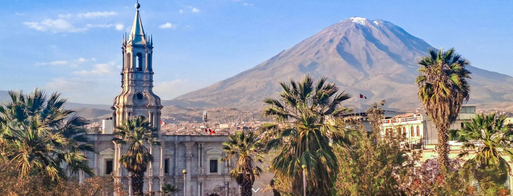
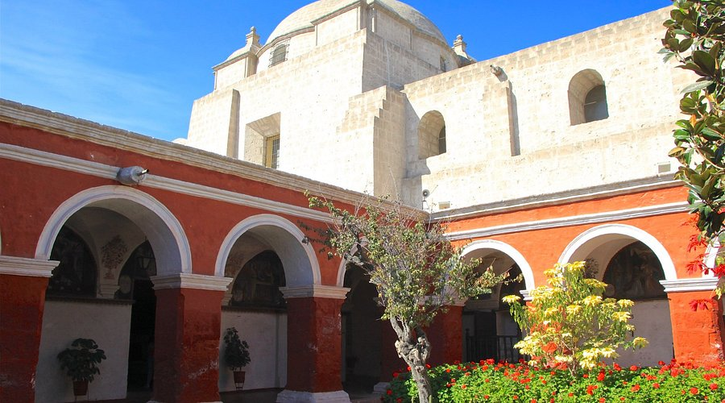
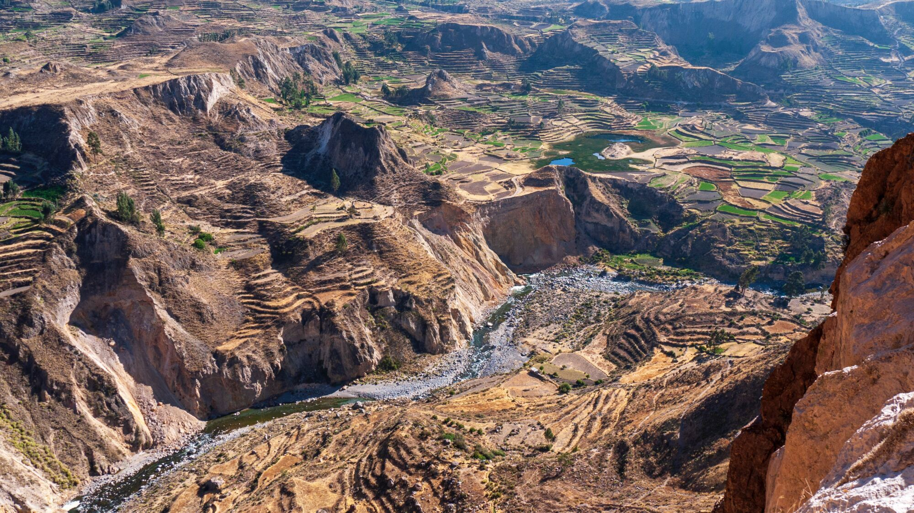
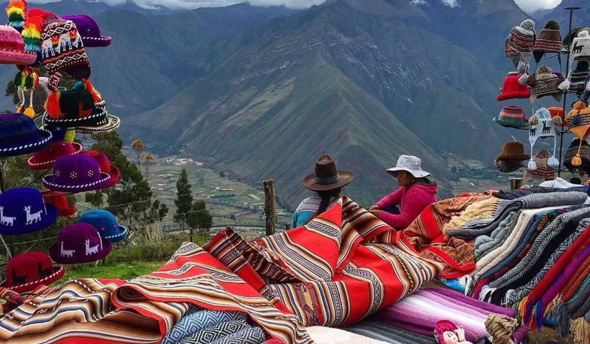
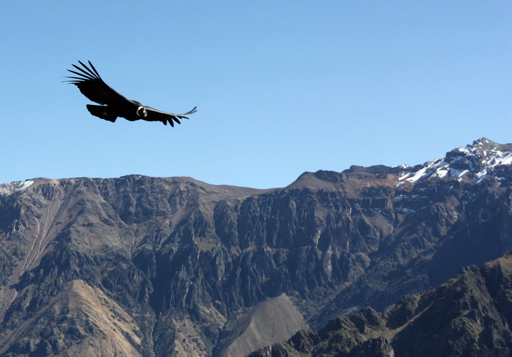
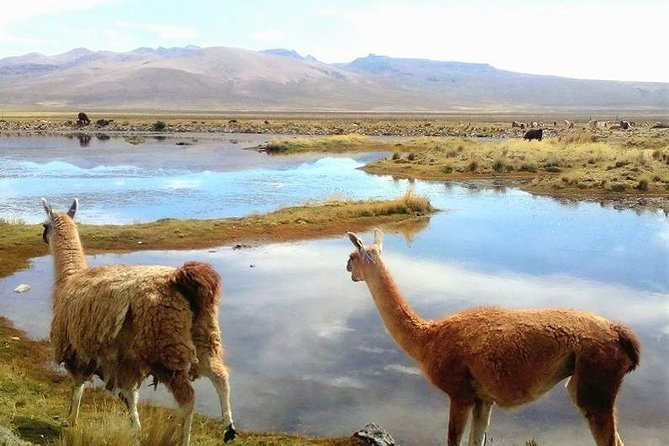

La Ciudad Blanca, de majestueuze condor, en een privétrektocht door één van de diepste kloven ter wereld.
Arequipa wordt beschermd door drie imposante vulkanen en staat op de UNESCO Werelderfgoedlijst. De stad is het vertrekpunt voor de Colca Canyon — met 3.270 meter diepte twee keer dieper dan de Grand Canyon. De condor, 's werelds grootste vliegende vogel, vliegt hier op ooghoogte langs.


Na de nachtrit arriveert de groep om 08:40 in Arequipa. Na inchecken in het hotel vertrekt om 10:00 de uitgebreide stadstour (4 uur) langs de hoogtepunten: de Sabandia-molen (1621), de Paucarpata-terrassen met drie vulkanen op de achtergrond, en het imposante Santa Catalina-klooster dat een heel stadsblok inneemt.
Daarna wandelen we naar de Plaza de Armas — door velen beschouwd als het mooiste plein van Peru — en de prachtige La Compañía de Jesús-kerk met haar barok-mestiezen voorgevel. Om 17:30 volgt de briefing voor de Colca Trek.


Om 06:00 vertrekt de groep richting Cabanaconde (Colca Vallei). De rit is al een spektakel op zich: vulkanen Misti, Chachani en Picchu Picchu, het Nationaal Reservaat Salinas y Aguada Blanca met lama's, alpaca's en wilde vicuñas, en de pas van Patapampa op 4.910 meter — het hoogste punt van de tour.
Vanuit Cabanaconde begint de afdaling: 3–4 uur via een rotsig pad tot het gehucht San Juan de Chuccho. Na de lunch nog 3 uur wandelen naar de oase van Sangalle (2.160m) — een tropisch paradijsje diep in de canyon, met een zwembad en eigen badkamer.


Opstaan om 04:00 voor de zwaarste klim van de trip: 1.200 meter omhoog in 2,5 tot 4 uur! Eenmaal boven in Cabanaconde wacht het ontbijt en dan: de Cruz del Condor.
De Cruz del Condor is de beste plek ter wereld om de condor van dichtbij te zien. Met een vleugelspanwijdte tot ruim 3 meter zweeft hij soms op enkele meters van ons langs. Daarna rijden we langs de rand van de canyon naar Yanque voor de middag. Optioneel: de thermale warmwaterbaden bij het hotel (35°C) voor die vermoeide spieren. 🛁
Volgende bestemming
De regenboogberg en wildwaterrafting op de Vilcanota — het avontuur gaat verder!
Verder naar Cusipata